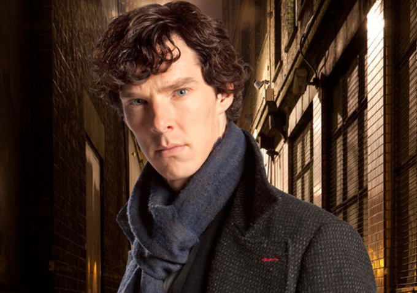
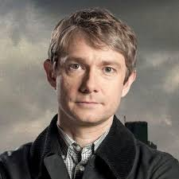
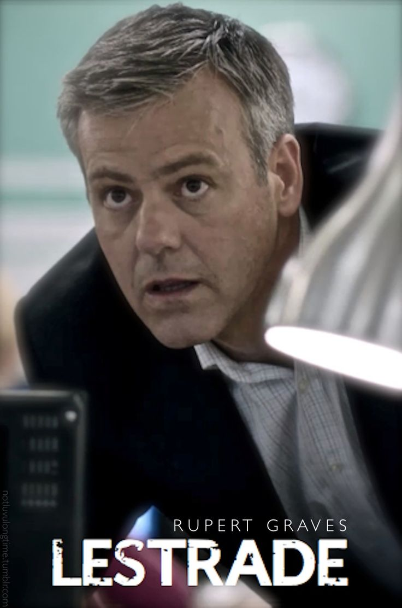
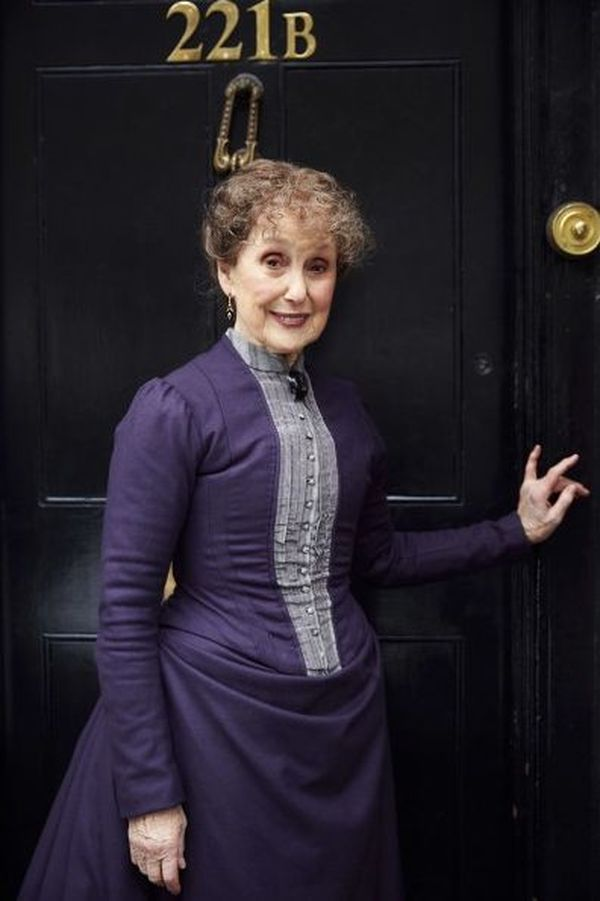
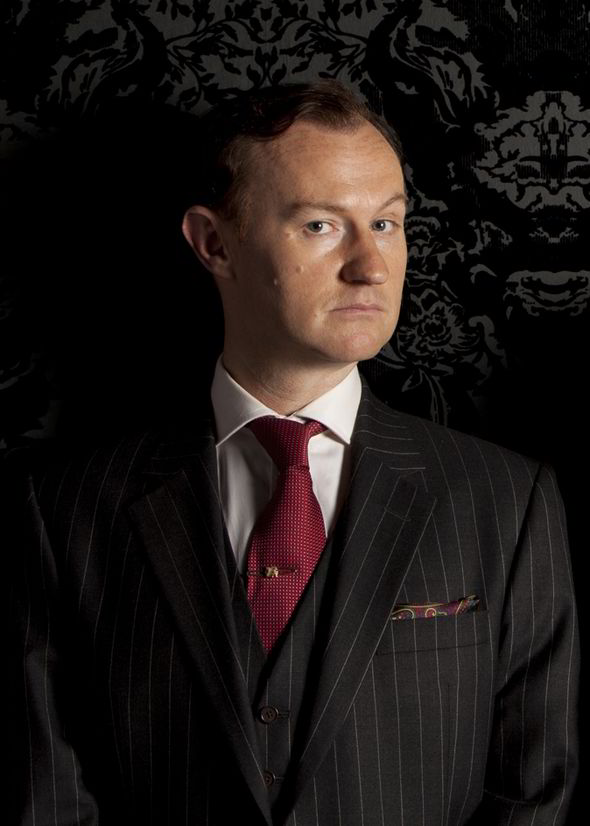
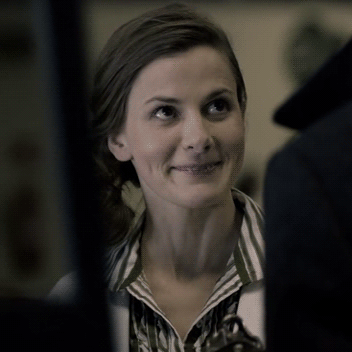
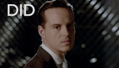
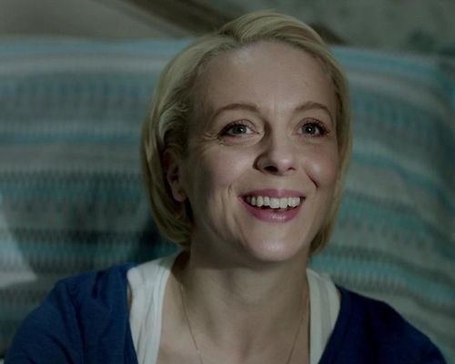

Sherlock is a crime drama television series based on Sir Arthur Conan Doyle's Sherlock Holmes detective stories. Created by Steven Moffat and Mark Gatiss, it stars Benedict Cumberbatch as Sherlock Holmes and Martin Freeman as Doctor John Watson. Thirteen episodes have been produced, with three-part series airing from 2010–2017, and a special episode that aired on 1 January 2016. The series is set in the present day, while the one-off special features a Victorian period fantasy resembling the original Holmes stories. Sherlock is a co-production of the British network BBC and the American station WGBH Boston for its Masterpiece anthology series on PBS, along with Hartswood Films, with Moffat, Gatiss, Sue Vertue and Rebecca Eaton serving as executive producers. The series is primarily filmed in Cardiff, Wales, with North Gower Street in London used for exterior shots of Holmes and Watson's 221B Baker Street residence.
Sherlock has received critical acclaim, with many reviews praising the quality of the writing, performances, and direction. Sherlock has been nominated for numerous awards including Emmys, BAFTAs and a Golden Globe, winning several awards across a variety of categories. The show won in three categories at the 66th Primetime Emmy Awards including Outstanding Lead Actor in a Miniseries or a Movie for Cumberbatch, Outstanding Supporting Actor in a Miniseries or a Movie for Freeman and Outstanding Writing for a Miniseries, Movie or a Dramatic Special for Moffat. Two years later, it won Outstanding Television Movie. In addition, the show was also honoured with a Peabody Award in 2011. The third series has become the UK's most watched drama series since 2001 while interest in the fourth series appeared to slip by approximately twenty percent. Sherlock has been sold to 180 territories.
|  | Sherlock Holmes | Benedict Cumberbatch |
|  | John Watson | Martin Freeman |
|  | Greg Lestrade | Rupert Graves |
|  | Mrs. Hudson | Una Stubbs |
|  | Mycroft Holmes | Mark Gatiss |
|  | Molly Hooper | Louise Brealey |
|  | Jim Moriarty | Andrew Scott |
|  | Rosamund “Mary” Watson (née Morstan) | Amanda Abbington |